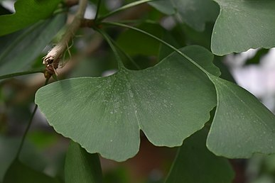

Lípa(Tilia) je rod opadavých stromů. Listy jsou střídavé, srdčité, čepel pilovitá až zubatá. Květy jsou ve vrcholících, zpravidla převislých. Stopka květenství má v dolní části přisedlý listen, který vytrvává i za plodu a tvoří létací aparát pro rozšiřování plodů. Květy jsou oboupohlavné, pětičetné. Tyčinek je 15–80, na bázi většinou srostlé v 5 svazečků. Semeník je pětipouzdrý, blizna pětilaločná. Plod je jednopouzdrý oříšek, semeno zpravidla 1, vzácně 2. Květy jsou opylovány hmyzem, plody rozšiřovány větrem.Čtěte více zde.
Pokud máte zájem o strom jinan, klikněte na obrázek. 